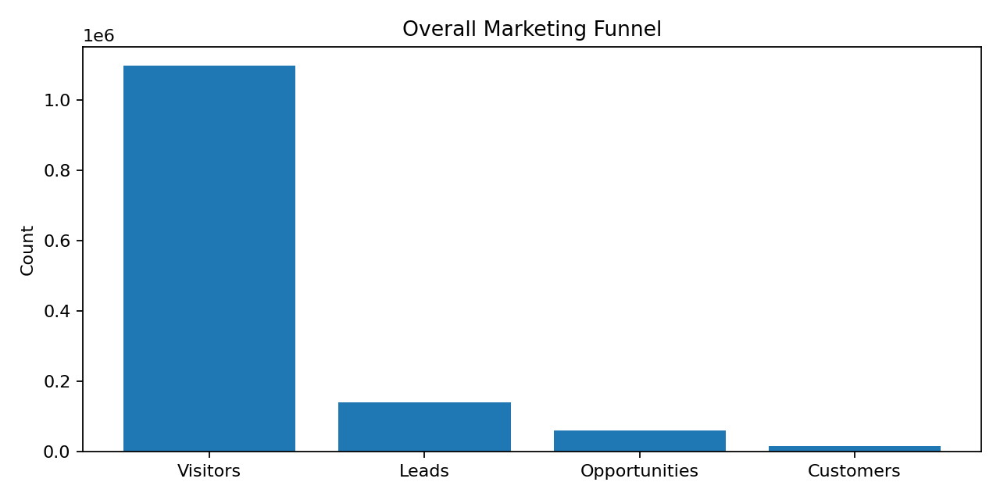
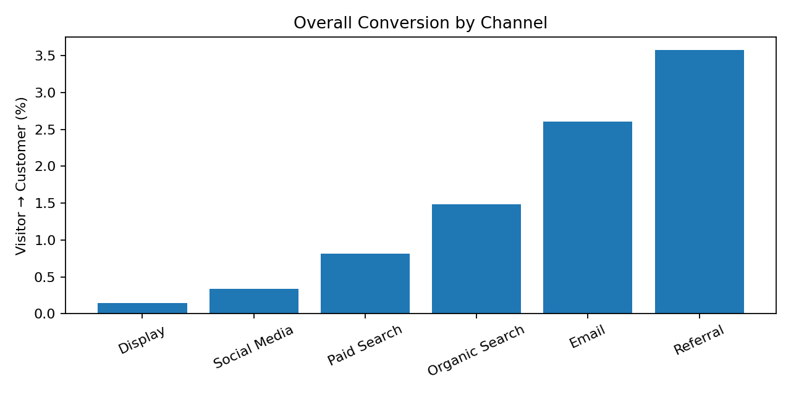
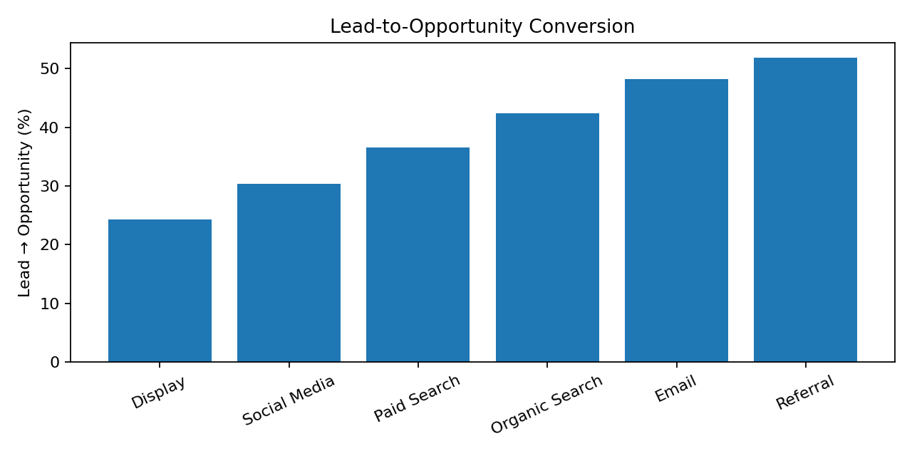

Marketing Funnel & Conversion Performance Analysis
Future Interns – Data Science & Analytics | Task 3
Visitors
1,096,788
Leads
139,150
Customers
16,426
Overall Conversion
1.50%



Insights
- Referral has the strongest visitor-to-customer conversion.
- Display has the weakest overall conversion.
- The weakest funnel stage is the clearest optimization target.
Recommendations
- Test stronger-converting channels while monitoring acquisition cost.
- Improve landing-page conversion where visitor-to-lead is weak.
- Strengthen lead nurturing where lead-to-opportunity conversion is weak.
- Track conversion and revenue together.